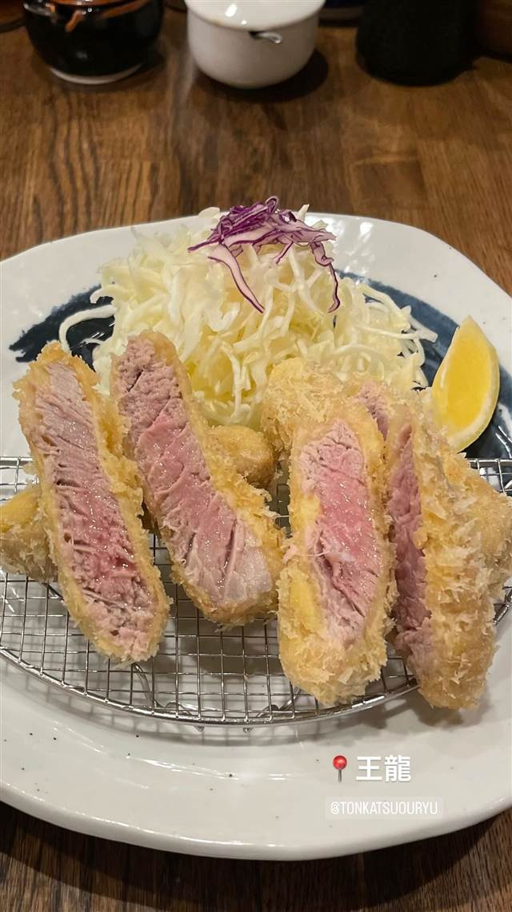
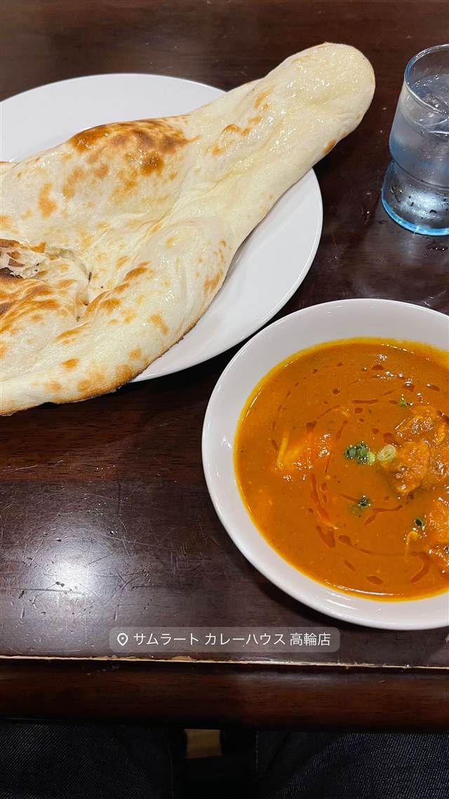

とんかつ 王龍
店主引退で暖簾を継いだ、公式サイトは今も旧店名「大五」のまま
王龍
白金で30年以上愛された「とんかつ大五」が、店主引退を機に2020年8月「とんかつ王龍」として生まれ変わった。かつての味を受け継ぎつつ、国産ブランド豚のとんかつを提供している。
TRIVIA
豆知識
- 公式サイトのドメインは今も「tonkatsu-daigo.com」のままで、前身「とんかつ大五」の名残をとどめている
REVIEWS
世間の評判
3.69食べログ
衣のサクサク感と肉の柔らかさ
- 衣が軽くてサクサクで肉は柔らかくジューシーだという声が多く聞かれる
- ランチはコスパが良く夜も4000円ほどで満足感が高いと評価されている
- キャベツおかわり無料やご飯量選択などの気配りが評価されている
- 土日は混雑して行列ができることがあり待ち時間が発生するという声がある
食べログ 口コミ533件
| 創業 | 2020年8月開業 |
|---|---|
| 系譜 | 白金で30年以上続いた老舗「とんかつ大五」の店主引退に伴い、暖簾を引き継ぐ形で改称・独立した。 |
| 看板 | とんかつ（国産ブランド豚使用） |
| こだわり | 厳選した国産ブランド豚を使用し、柔らかな肉質とコクを引き出す独自の調理法。 |
| どこから | 都心 |
| 営業時間 | 月 休み 火〜日 11:30-14:30、17:30-21:00 |
| 予算 | 昼 ¥1,000～¥1,999 夜 ¥3,000～¥3,999 |
| 定休日 | 月曜 |
| 場所 | 白金高輪駅 東京都港区白金 |
| メモ | 白金高輪駅から徒歩7分、五の橋通り沿い。アットホームな店内。 |
食べたもの：とんかつ
NEARBY
近い店・同じ系統の店
-
 ★
焼肉 白金高輪駅
炭焼 金竜山
ロンドン帰りの店主夫妻が焼く上タン塩とシャトーブリアン
夜 ¥20,000～¥29,999
★
焼肉 白金高輪駅
炭焼 金竜山
ロンドン帰りの店主夫妻が焼く上タン塩とシャトーブリアン
夜 ¥20,000～¥29,999
-
 ピザ 白金高輪
タランテッラ ダ ルイジ（TARANTELLA da luigi）
マルゲリータ考案者の子孫に師事した店主のナポリピッツァ
昼 ¥1,000～¥1,999 夜 ¥6,000～¥7,999
ピザ 白金高輪
タランテッラ ダ ルイジ（TARANTELLA da luigi）
マルゲリータ考案者の子孫に師事した店主のナポリピッツァ
昼 ¥1,000～¥1,999 夜 ¥6,000～¥7,999
-
 パスタ 白金高輪
アル チェッポ (Al Ceppo)
季節で北と南のイタリアが入れ替わる、ビブグルマンの一皿
昼 ¥1,000～¥1,999 夜 ¥8,000～¥9,999
パスタ 白金高輪
アル チェッポ (Al Ceppo)
季節で北と南のイタリアが入れ替わる、ビブグルマンの一皿
昼 ¥1,000～¥1,999 夜 ¥8,000～¥9,999
-
 喫茶店 白金高輪駅
ベルエキップ（Belle Equipe）
フランス語で「良き仲間」を意味し、一杯ずつ淹れるネルドリップ珈琲
昼 ¥1,000～¥1,999 夜 ¥1,000～¥1,999
喫茶店 白金高輪駅
ベルエキップ（Belle Equipe）
フランス語で「良き仲間」を意味し、一杯ずつ淹れるネルドリップ珈琲
昼 ¥1,000～¥1,999 夜 ¥1,000～¥1,999
-
 カフェ 白金高輪駅
THE VEGEBOND CAFE
群馬・高崎の農園の野菜を加熱せず搾るジュース・スムージー専門店
昼 ～¥999 夜 ¥1,000～¥1,999
カフェ 白金高輪駅
THE VEGEBOND CAFE
群馬・高崎の農園の野菜を加熱せず搾るジュース・スムージー専門店
昼 ～¥999 夜 ¥1,000～¥1,999
-

インド・ネパール 白金高輪 サムラート カレーハウス 高輪店 日本に初めてバターチキンカレーを伝えた元祖の一皿 昼 ¥1,000～¥1,999 夜 ¥1,000～¥1,999